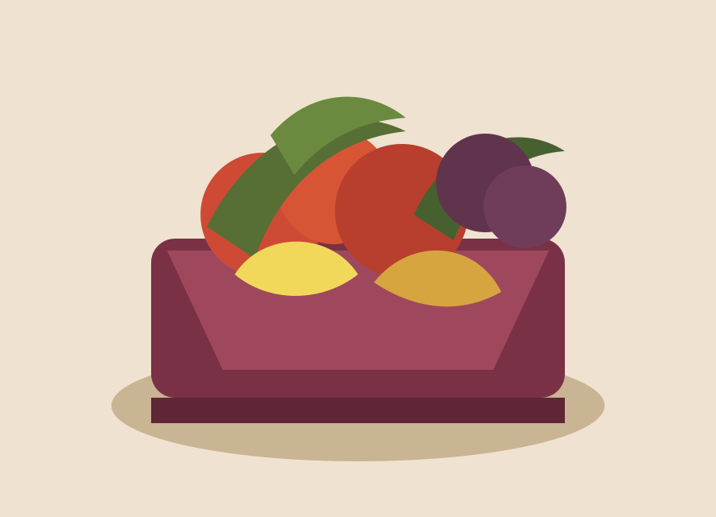

GreenHarvest
GoIT HTML+CSS team project built with Vite, semantic partials, responsive layout, optimized SVG assets, and GitHub Pages deployment.

Project Structure
- Vite project setup with `pnpm` scripts.
- HTML sections are split into `src/partials`.
- All styles are managed from `src/css/main.css`.
- SVG icons are stored in a single sprite file.
Implemented Sections
- Header, Hero, How it works, Advertisement.
- Vegetables product cards and customer reviews.
- Order form with required fields and social links.
- Footer with navigation and contact information.
Responsive Delivery
- Mobile-first layout from 320px.
- Tablet breakpoint from 768px.
- Desktop breakpoint from 1280px.
- Production build deployed to GitHub Pages.
Submission Links
Live page:
https://sedefkalkanli.github.io/greenharvest-project/
Pull request:
https://github.com/sedefkalkanli/greenharvest-project/pull/1
Prepared by Sedef Kalkanli.